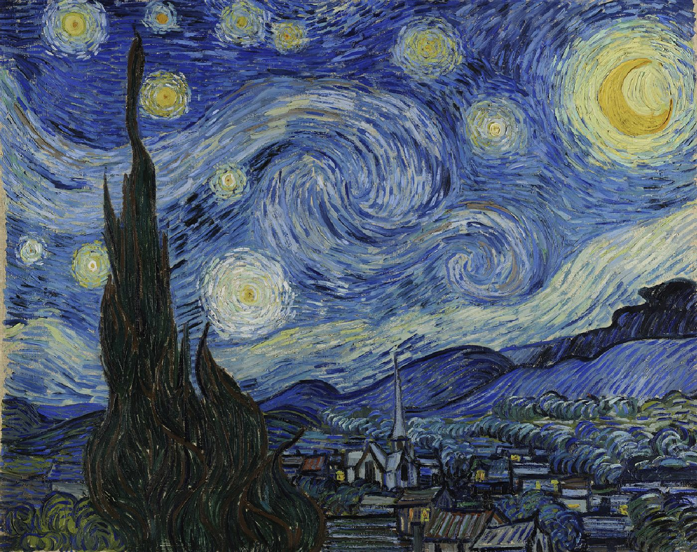
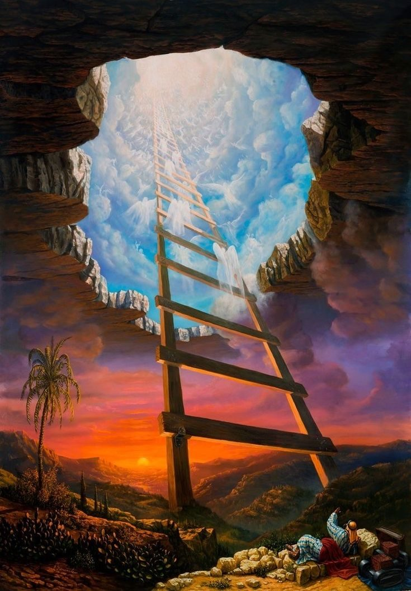
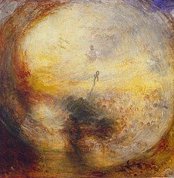
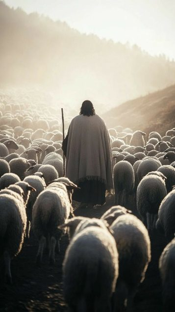

Vayetsé 5786
L’exil de la vérité
L’exil de la vérité
Le Midrash Rabbah1 rapporte une scène qui se déroule au moment de la Création. D. s’apprête à façonner l’homme et consulte Ses attributs, les anges de Création pour avoir leurs avis.
Certains plaident en sa faveur : l’homme saura aimer, créer, chercher le bien.
D’autres, au contraire, redoutent sa fragilité, sa tendance au mensonge, à la violence, à la corruption.
Au centre du débat, la Vérité, le Emet, s’avance et tranche : « L’homme sera plein de tromperie. » Elle ne nie pas le bien possible, mais elle met en avant un risque profondément humain : celui de perdre la lumière même lorsqu’elle est donnée. D. prend alors la Vérité et la projette pour l’enterrer dans la terre. Mais la vérité n’est pas absente ; elle reste présente, cachée, enfouie au cœur du monde, attendant ceux capables de la faire émerger. Il faut comprendre que dans sa forme première, la Vérité est trop unifiée pour être reçue.
Elle doit descendre vêtue, recouverte d’habits2 et céder momentanément place à des vérités, enfouies derrière les couches de la matérialité. Son dévoilement se fait lentement, dans le temps, dans l’Histoire, dans les âmes et c’est dans ce cadre que nous proposons de relire le chemin de Yaakov, qui incarne justement l’attribut du Emet3.
Yaakov, désormais dépositaire des bénédictions, est à son tour projeté par son père dans la noirceur du monde de mensonge de Lavan, où il devra faire émerger la Vérité pendant près de vingt ans. Il accepte de quitter le confort de sa tente d’étude pour se confronter au monde extérieur, afin d’en extraire ses enfants, sa famille, le bayit, la maison qui deviendra la sienne, et d’assumer ainsi la lourde responsabilité d’édifier une continuité, en construisant une famille qui servira d’architecture spirituelle au peuple d’Israël. Mais ne nous y trompons pas : le récit biblique du séjour du patriarche Yaakov chez son oncle Lavan dépasse de loin la simple chronique familiale ou le conflit pastoral. Dans la littérature de nos Sages, cette narration constitue une allégorie cosmologique majeure, mettant en scène la confrontation entre deux réalités diamétralement opposées : L'attribut divin de Emet (Vérité), incarné par Yaakov, et l'Alma d'Shikra (le Monde du Mensonge), personnifié par Lavan. |
|---|
Cette étude propose d’analyser la mise en sommeil de la Vérité, nécessaire pour la confronter au Mensonges de Lavan, où elle devra faire émerger les étincelles de lumière perdues et faire germer l’histoire du peuple d’Israël.
La mise en sommeil de la Vérité
Pour saisir la nature de la tension éprouvée par Yaakov, il convient d'abord de définir le territoire spirituel dans lequel il pénètre. Haran, et spécifiquement la maison de Lavan, ce ne sont pas de simples lieux géographiques, mais des coordonnées spirituelles dans la structure de l'Alma d'Shikra (le Monde du Mensonge), et de comprendre le sommeil de Yaakov et le rêve de l’échelle.
Le Zohar (Parashat Vayetze, 146b-147a) offre une lecture radicale du verset introductif : "Yaakov sortit de Beer-Sheva et s'en alla à Haran". Le texte mystique associe le départ de Yaakov au mouvement solaire, citant l'Ecclésiaste : "Le soleil se lève, le soleil se couche". Ici, Yaakov est identifié au soleil qui, ayant brillé dans la clarté de Beer-Sheva (le domaine de l'étude et de la sainteté pure), doit maintenant se "coucher" pour entrer dans l'obscurité de l'Ouest.
Le Zohar explique que lorsque le soleil se couche, la vision devient trouble, les frontières s'estompent, et le monde entre dans un état où la réalité est susceptible d'être déformée, le monde du mensonge, l'Alma d'Shikra : un domaine où l'apparence ne correspond pas à l'essence.
Cette "descente" du soleil n'est pas un accident, mais une nécessité cyclique. De même que la nuit est inévitable pour le cycle cosmique, l'immersion de la Vérité (Yaakov) dans le Mensonge (le monde de Lavan) est indispensable à la complétude du Tikkun (réparation). La tension de Yaakov est alors celle d'une conscience « solaire » luttant pour maintenir sa luminosité interne alors que l'environnement extérieur impose les ténèbres. Mais, le danger est immense : dans l'obscurité, la Vérité risque d'être non seulement cachée, mais totalement oubliée ou inversée.
Le début de notre paracha situe Yaakov sur le mont Moriah, là où les temples seront construits, à la frontière de son exil physique d’erez israel (puisqu’il se rend chez Lavan à Padam Aram, à l’endroit d’où vient Avraham et sa mère Rivka) et de son exil spirituel.
Et il sombre dans la nuit (qui tombe plus vite que prévue) et le sommeil, le premier, après quatorze années à étudier la torah dans la yechiva de Chem et Ever jour et nuit sans dormir. Il rêve alors d’une échelle où les anges, les forces qui font mouvoir la création montent et descendent. Comment comprendre cette mise en sommeil de Yaakov ? Pourquoi sombre-t-il à cet endroit et ce moment-là ?
Le texte biblique introduit le rêve par une formule singulière : "Il rencontra le lieu" (Vayifga ba-makom). Le verbe Vayifga ne suggère pas une arrivée douce ou progressive, mais un impact, une collision.
Rachi, s'appuyant sur le traité Berakhot (26b), nous enseigne que Yaakov a institué ici la prière du soir (Arvit). Cette institution liturgique est fondamentale pour comprendre la posture de Yaakov face à l'exil.
Contrairement à Abraham qui institue la prière du matin (Sha'harit), associée à la miséricorde naissante et à la clarté, et à Isaac qui institue celle de l'après-midi (Min'ha), associée à la rigueur du jour déclinant, Yaakov est le maître de la nuit. La prière d'Arvit est facultative (reshut) à l'origine, bien qu'elle soit devenue obligatoire par l'acceptation d'Israël 4. Cette nature "optionnelle" reflète l'incertitude de la nuit : dans l'obscurité de l'exil, la connexion avec le Divin ne s'impose pas avec l'évidence du soleil ; elle relève d'un choix volontaire, d'un effort pour percer les ténèbres. |
 |
|---|
Le Zohar (I, 147a) interprète cette "rencontre" comme une connexion avec la racine spirituelle du monde. Le "Lieu" (HaMakom) qui n'est autre que le Mont Moriah, le futur site du Temple, est le point de jonction entre le Ciel et la Terre. Cependant, le Zohar souligne une anomalie temporelle : "le soleil s'était couché" (Ki va ha-shemesh). Cette obscurité soudaine, prématurée selon certains Midrashim, signale à Yaakov qu'il entre dans une nouvelle ère de l'histoire divine. Il ne s'agit plus de servir D. dans la lumière évidente de la Terre d'Israël, mais de maintenir la foi quand le "soleil" de la Providence semble s'éclipser.
L'obscurité qui enveloppe Yaakov est perçue par le Sfat Emet comme la manifestation tangible de l'exil. Tant que Yaakov résidait sous les tentes de ses pères, il bénéficiait d'une clarté spirituelle directe. Le départ vers 'Haran marque l'entrée dans le "monde de l'action" (Olam HaAssiya) et de la dissimulation (Hester Panim).
 |
Le soleil qui se couche représente le retrait de la lumière divine manifeste évidente de l’étude de la Torah. Et c'est dans ce contexte que l'échelle devient un outil indispensable. En plein jour, l'échelle est superflue car l'horizon est dégagé et la connexion entre le Ciel et la Terre est visible. La nuit, en revanche, abolit les repères horizontaux et isole l'individu. L'échelle devient alors le seul moyen de rétablir une verticalité. Le rêve de Yaakov n'est donc pas une évasion de la réalité, mais une réponse stratégique à l'obscurité : Comment construire un pont vers le transcendant lorsque l'environnement immédiat (Lavan, l'exil) est plongé dans la nuit morale ? Le Sfat Emet explique que Yaakov a ainsi compris le secret de l'échelle : le divin est présent même dans les processus naturels les plus bas et il fait partie du plan divin. D’ailleurs citons le midrash qui présente des anges qui montent et descendent aussi pour constater que le visage de Yaakov est gravé dans le ciel sous le trône divin. Nous avons donc enfin trouvé un homme qui peut représenter les hommes, l’humanité et poursuivre la réparation tant attendue de la faute d’Adam. |
|---|
L’état prophétique de Yaakov consécutive de son rêve, est ainsi une mise en évidence de son association au plan divin mais cela ne s’arrête pas, il est aussi révélé à Yaakov la façon dont il devra combattre les forces du mensonge lorsqu’il sera enfoui chez Lavan. L’échelle symbolise le don de la Torah de Yaakov, qui est la seule manière de rattacher le Ciel et la Terre, s’entendant comme la matérialité et la spiritualité, la réalité terrestre et la volonté divine.
Selon la célèbre analyse du Baal Hatourim sur le verset 22 du perek 28 de notre paracha, la valeur numérique du terme « Sullam » (échelle), composée des lettres Samech, Lamed et Mem (סלם), correspond à 130 (60 + 30 + 40). Cette valeur est identique à celle du mot « Sinaï » (סיני), formé des lettres Samech, Yod, Nun et Yod (60 + 10 + 50 + 10).
Le sommeil de Yaakov, à ce moment précis de son parcours, revêt une signification particulière. Lui qui s’est abstenu de dormir durant quatorze années passées à la Yechiva de Chem et Ever5, plongé sans relâche dans l’étude de la Torah, et qui ne prendra pas de repos durant vingt années chez Lavan, se voit contraint ici de s’abandonner au sommeil. Mais ce sommeil n’est pas simplement une pause physique, mais un acte porteur de sens : il incarne la nécessité d’accepter l’enfouissement de la vérité dans la terre, tout en maintenant un lien inaltérable avec le Ciel.
À travers cette expérience, Yaakov apprend à donner un sens à son exil.Car, même dans cette obscurité, le lien avec le divin demeure, invitant Yaakov à transformer l’épreuve de l’exil en un chemin vers la transcendance.
La Vérité face aux mensonges
L’exil de la Vérité de Yaakov est personnifié par Lavan, son beau père, l’homme des mensonges, des vérités détournées, dépeint comme un adversaire spirituel sournois, symbolisé par le froid et le scorpion.
Il est littéralement le “blanc” trompeur, symbole du froid spirituel, et de la ruse intellectuelle qui risque de déraciner la foi. Son attaque n’est pas frontale mais souterraine : il accueille Yaakov chez lui, puis cherche à le retenir, à le corrompre (par l’idolâtrie ou par l’attrait matériel). Lavan est associé au scorpion dont le venin engourdit et paralyse. Il incarne la klipat ha’kor, la coquille de la froideur. Si « la morsure du serpent brûle » (donne de la fièvre), évoquant le mal relatif aux élans passionnés la « piqûre du scorpion » glace (donne des frissons de froid) et plonge ses victimes dans un long rêve rempli de doutes pour mieux les dévorer.
Son apparente bienveillance cache une mort lente. C’est la menace la plus redoutable : « plus à craindre que l’épée de Pharaon », car difficile à détecter et à combattre6
Le Talmud illustre cette différence de danger entre le scorpion et le serpent par une halah’a : « Si un serpent s’enroule sur ton talon pendant ta prière, ne l’interromps pas ; mais si c’est un scorpion, interrompt-toi » (Michna Berah’ot 5 :1). Autrement dit, le scorpion est considéré comme plus mortel que le serpent, allusion voilée au fait que la froideur spirituelle est plus délétère que les élans pécheurs ponctuels. Le Baal HaTanya (Torah Or sur notre paracha) écrit que cette klipa engendre l’atzvout (mélancolie, désespoir) et l’atzlut (l’inertie paresseuse) qui paralysent l’âme. On pourrait dire qu’elle transforme la personne en « cadavre refroidi sur une dalle de glace », incapable de ferveur ou de progrès. Au contraire, la sainteté est comparée à une flamme : « un feu ardent, allumé par la Torah et les mitzvot ». |
|---|
Le Zohar dresse de Lavan un portrait redoutable, il le dépeint non pas comme un guerrier physique, mais comme un sorcier et manipulateur spirituel de premier ordre. Zohar I,166b, enseigne en effet que « la rumeur disait qu’aucun homme ne pouvait échapper aux griffes de Lavan l’Araméen, tant il était versé dans les sortilèges et la magie… Lavan était le plus grand sorcier de tous ». Yaakov lui-même reconnaît cette menace occulte : lorsqu’il envoie un message à Essav pour l’apaiser, il souligne « Im Lavan garti » « J’ai séjourné chez Lavan » (Genèse. 32 :5), ce que le Zohar interprète ainsi : “J’ai habité chez Lavan (et j’en suis sorti indemne) …”, pour signifier qu’il avait triomphé du plus grand des sorciers.
Lavan endort ses proies et les met en sommeil, en apparente bienveillance (son nom signifie “blanc”) il cache une mort lente, celle de l’exil assimilateur, où la frontière entre le bien et le mal est abolie, le mensonge est alors roi et la vérité perdue.
Pourquoi la Providence divine impose-t-elle cette épreuve à Yaakov ? Pourquoi la Vérité ne peut-elle pas rester pure à Beer-Sheva dans la maison paternelle à l’abri du mensonge ? Pourquoi envoyer la vérité face à son antithèse ? La réponse réside dans le concept du Birur Nitzotzot : le tri, la clarification des étincelles qui va animer le combat de Yaakov chez Lavan.
Trier les étincelles de la Vérité
Les textes de la mystique juive, indiquent que Lavan possédait une grande richesse matérielle qui correspondait, sur le plan spirituel, à des "étincelles de sainteté" tombées très bas lors de la "Brisure des Réceptacles" primordiales.
Nous avons effleuré ce terme la semaine dernière pour expliquer que le Créateur a volontairement mis en place un système de réception de la lumière sous-dimensionné par rapport à l’immensité des lumières qui devait s’y déverser, entrainant une brisure de ces réceptacles. Les débris de ces réceptacles ont alors chuté de niveau et se sont retrouvés dans des niveaux très inférieurs et notamment le nôtre, le monde de l’action le niveau le plus bas.
La chute de ces réceptacles a également entrainé la chute d’étincelles de lumières dans ces niveaux inférieurs que nous devons dès lors par notre avoda, l’étude de la torah, la pratique des mitsvots, et parfois juste notre simple présence à un endroit donné, récupérer pour reconstituer les réceptacles brisés et les replacer dans un monde spirituel réparé.
Ainsi, Yaakov/la Vérité ne va pas chez Lavan/le mensonge uniquement pour fuir Essav, mais pour une mission de sauvetage. Mais pour extraire les étincelles enfouies dans la boue, il faut mettre les mains dans la boue. Et la Vérité (Yaakov) doit être "jetée à terre" (chez Lavan) parce que c'est là, dans la terre, que se trouvent les fragments divins à récupérer. Or seule la Vérité de la Torah permet de faire ressortir les lumières perdues parmi les nations. Lavan apparaît dans les textes comme un blanc indifférencié, une lumière trop uniforme pour laisser émerger la distinction, la nuance, la personnalité. Chez lui, tout se confond, Rahel et Léa se confondent, le temps n’a plus la même valeur “Les jours furent comme quelques jours” dira Yaakov à Rahel. On y est comme dans un rêve éveillé, celui de l’exil, où le vrai et le faux se confondent dans une même pâleur trompeuse. Yaakov, lui, arrive comme celui qui diffracte, qui déploie, qui donne la forme et la couleur à ce blanc compressé. |
 Turner – “Light and Colour (Goethe’s Theory) |
|---|
Il incarne le prisme de la Vérité qui permet de transformer un blanc informe en couleurs. Et de cette séparation émergent douze couleurs, correspondant aux douze tribus d’Israël.
À la lumière de ce principe, l’épisode de Yaakov chez Lavan peut être relu avec une profondeur nouvelle.
Le Ari Hakadoch (Shaar HaGilgoulim introduction 22, 31, 36) nous enseigne en effet qu’une partie des étincelles de lumière, disséminées dans l’histoire et perdues depuis la faute d’Adam Harishon, se sont incarnées dans le troupeau de Lavan. Ce troupeau porte en lui les nechamot du peuple d’Israël, en attente de réparation, et d’une migration définitive dans la descendance de Yaakov (qui n’arrivera qu’après l’exil égyptien).
Lors de sa première rencontre avec les troupeaux de Lavan, Yaakov observe qu’une lourde pierre obstrue l’accès au puits dont dépend l’abreuvement des bêtes. Il en retire la pierre, fait jaillir l’eau vive, et abreuve lui-même les troupeaux de Lavan (Bereshit Rabbah 70 :8). Derrière ce geste se cache un message plus profond : Yaakov libère les flux de lumière retenus dans le puit et les déverse dans le troupeau.
Puis pendant 20 ans et en particulier les 6 dernières années, la Torah raconte comment Yaakov garde et acquiert les troupeaux de Lavan : il propose de ne recevoir comme salaire (des 6 dernières années) que les bêtes tachetées, rayées et mouchetées qui naîtront du troupeau. Il place alors, devant les femelles en période d’accouplement, des bâtons de peuplier, d’amandier et de platane dont il a retiré par endroits l’écorce, faisant apparaître des stries blanches. Les brebis mises en présence de ces motifs donnent naissance à des petits marqués, tachetées et mouchetées et le troupeau de Yaakov se constitue ainsi progressivement.
L’acquisition des troupeaux de lavan, en faisant apparaître des pédigrées de moutons tachetées, rayées et mouchetées7, ne visent nullement à s’enrichir matériellement dans le cadre d’un arrangement avec Lavan (son père Itshak est déjà l’un des hommes les plus prospères de son époque). Elle constitue à la lumière de cette enseignement une opération de récupération spirituelle : Yaakov extrait des lumières dispersées pour les transférer dans sa descendance. De même, les manipulations complexes des bâtons de peuplier, d’amandier et de platane, banales techniques d’élevage, en apparence, sont interprétées par les sages du Zohar comme des actes théurgiques. Yaakov « pèle » l’écorce pour faire apparaître le blanc intérieur, séparant ainsi la pureté du blanc véritable de l’apparence trompeuse de Lavan. |
 |
|---|
Le Zohar (146b–165b) nous précise que ces incisions avaient pour but de révéler l’Unité divine en infiltrant la lumière infinie jusqu’au troupeau de Lavan, jusqu’à ce que les étincelles puissent être extraites et ramenées à leur source véritable8.
L’acte de Yaakov bien qu’en apparence banale est cosmique, il doit faire descendre des lumières piégées dans le troupeau de Lavan à l’intérieur de la matière et dans sa descendance. Depuis un niveau très élevé, où là-bas tout est hessed, tout est blanc, mais informe et non perceptibles vers la matière, les couleurs, les corps de la famille d’Israel.
Nos sages nous font d’ailleurs remarquer que le troupeau de Lavan est composé de 70 bêtes au début de la paracha et se multiplie en un troupeau de 600 000 bêtes à la fin de la paracha. En parallèle avec la famille de Yaakov qui descend en Égypte composé de 70 âmes pour en ressortir 210 plus tard, composés de 600 000 âmes.
Cet épisode marque la finalité du birour, du tri engagé par Yaakov dans les troupeaux : après avoir séparé les lumières de l’écorce, construit sa famille, et son troupeau, Yaakov quitte Lavan.
Et le départ de la famille peut alors s’accomplir, non comme une fuite, mais comme une extraction réussie des étincelles perdues, désormais ramenées du blanc trompeur de Lavan au blanc véritable de la lumière divine.
La Vérité germera
L’histoire de Yaakov ne se résout finalement non par l’évasion, mais par la transformation.
Son sommeil du début de paracha n’est pas une faiblesse, mais le déclenchement d’un principe cosmique : la Vérité est « jetée à terre » pour être en mission, afin de pénétrer les couches les plus opaques du réel, d’en extraire les étincelles divines, et de préparer l’apparition du peuple d’Israël.
L’histoire de Yaakov est ainsi le drame du Emet, de la Vérité Absolue, obligée de circuler voilée exilée au sein de l’Alma d’Shikra, le monde des vérités multiples.
La “Vérité jetée à terre” de Daniel 8 :12 devient la “Vérité qui germe depuis la Terre” du Psaume 85 verset 12. Car une graine, pour produire du fruit, doit d’abord être jetée dans le sol, enfouie dans l’obscurité et la pourriture. De même, la Vérité de Yaakov, après avoir été “pourrie” par vingt ans de proximité avec la tromperie de Lavan, ne meurt pas ; elle germe. Le fruit de cette germination, ce sont les Douze Tribus d’Israël. Ces tribus n’auraient pas pu naître dans la pureté stérile d’une étude isolée. Elles devaient naître dans le frottement avec la réalité dure et trompeuse, acquérant ainsi une résilience capable de survivre à l’histoire, car rattachées aux étincelles de lumière perdues chez Lavan. |
|---|
La Vérité qui sort de chez Lavan n’est plus une lumière abstraite, suspendue dans les hauteurs : elle se transforme en Israël : une identité charnelle, nationale, historique, capable d’insuffler sainteté et orientation divine au cœur même de la matière.
Yaakov prouve alors que D. n'est pas seulement le D. des cieux (le sommet de l'échelle), mais aussi le D. de la terre, des contrats et des brebis, du bas de l’échelle, là où l’homme s’endort. Et en extrayant la richesse ("les étincelles de sainteté") de la maison de Lavan, Yaakov accomplit la promesse de l'échelle : il fait remonter vers le ciel ce qui était tombé au plus bas.
À cette lumière de cet enseignement, le deuxième grand père du peuple d’Israël Lavan cesse d’apparaître simplement comme l’antagoniste, le beau-père rusé et oppressif. Il devient une force de la création, un agent paradoxal indispensable à l’évolution de Yaakov en Israël, à la germination de la Vérité elle-même.
Dès lors, il faudrait certainement se peiner à relire les drames de l’histoire juive, et leurs falsifications, comme des oppressions nécessaires à l’éclatement de la Vérité et du peuple d’Israël, celle de l’avènement de l’ère messianique et de la libération des étincelles, de la Geoula, comme conclusion de l’exil des étincelles perdues.
אֱמֶת מֵאֶרֶץ תִּצְמָח וְצֶדֶק מִשָּׁמַיִם נִשְׁקָף (Psaume 85 verset 12),
La vérité germera de la terre Et la justice9 regardera (ou se penchera) depuis les cieux.
Yehi Ratson, que telle soit la volonté divine,
Que nous soyons capables grâce à notre avoda, l’étude de la Torah, et notre quotidien, de rattraper
les étincelles de lumières perdues dans le monde pour conclure l’histoire et accéder à la
délivrance.
Chabbat Chalom !
 Si on doit essayer de ne retenir qu’un point de comportement de cette étude
Si on doit essayer de ne retenir qu’un point de comportement de cette étude
Nous observons un personnage qui reste Vrai, entier, au sein du mensonge reflétant l’adage de nos sages : "La vérité tient debout, le mensonge ne tient pas" (Shabbat 104a). La difficulté de Yaakov provenait de l'instabilité inhérente au monde de Lavan (salaires changés, promesses brisées). En maintenant sa propre constance ("J'ai servi de toutes mes forces"), Yaakov a prouvé que la Vérité possède une existence durable, contrairement au Mensonge qui, bien que puissant et envahissant, est finalement voué à la vacuité et à l'effondrement. Si on peut dire : à l’image de Yaakov et de D. sous son attribut de Emet, qui ne subit aucune variation (quel que soit le niveau où Sa lumière s’infiltre), soyons-nous aussi capables de rester dans le vrai dans ce monde de mensonge, qui nous tire vers le bas, vers la matérialité et les plaisirs de ce monde.
L’idée de la semaine
Le Sfat Emet enseigne que le Sceau de D. est la Vérité (Hotamo Emet) mais un sceau doit être pressé avec force contre la cire ou l’argile pour laisser son empreinte. La tension de Yaakov chez Lavan était la pression nécessaire pour imprimer la forme de la Vérité divine dans la matière résistante de ce monde.
Si le rouleau de la torah est écrit par des lettres d’encre noires sur du parchemin blanc, nos sages nous révèlent qu’à la fin des temps, il sera écrit avec un feu blanc sur du parchemin blanc, matérialisant la fin du Tikoun, le retour à la source : le blanc.
 Pour aller juste un peu plus loin…
Pour aller juste un peu plus loin…
L’Eternel est un (aleph) et il est le Alouph chez Olam litterallement le dirigeant du monde.
Le mot vayetse (vav, youd, tsadé, aleph), il sortit, est l’acronyme des mots : Vayera (vav) Yaakov (youd) xourat (tsadé) aleph (aleph) en français : « il vit Yaakov la forme de la lettre aleph ». Le Mégalé Amoukot (rabbi Natan Shapira) nous enseigne que tout le temps où Yaakov était chez Lavan, il formait dans son esprit la lettre Aleph pour ne pas se faire influencer par le milieu ambiant et maintenir sa conscience de l’unité divine.
Toujours dans le même thème le baal issahar nous enseigne au nom du Zohar, que la faute d’Adam a obscurci le aleph de trois manières (à l’image d’une eclipse solaire car rien ne peut entacher l’unité de D.).
Le aleph de la avoda zara en détournant la parole divine, Adam a entaché la dimension du maitre : le nom de D. qu’on prononce mais qu’on n’écrit pas adnout אדנות devient alors le din la sévérité דין
Le aleph de la vie de l’homme a été entaché par l’effusion de sang אדם : l’homme Adam devient דם dam le sang
Le aleph de la vérité אמת emet devient מת met la mort
Avraham fera la réparation du aleph de la avoda zara en enseignant le monothéisme à l’humanité. Itsh’ak donnera littéralement sa vie pour D., réparant ainsi le aleph de l’effusion de sang originelle. Et Yaakov en restant un homme droit à la recherche de la vérité dans un monde de mensonge rétablira le aleph du Emet de la Vérité. Et c’est certainement pour cela que le Talmud nous enseigne que Yaakov ne meurt pas (met).
S.Mandé, le 6 Kislev 5786 rédigé par B.A. Toute réflexion peut être adressée avec joie sur le : mail. Les chiourims se trouvent sur les liens Telegram et sur google drive |
 |
|---|
 Plan du chiour
Plan du chiour
Introduction : La Vérité enterrée dans la Terre Midrash Rabbah : Vérité jetée à terre « Emet me’eretz titzmach » La vérité comme lumière trop forte pour les mondes Contexte général : Yaakov = Emet ; Lavan = Alma d’Shikra Yaakov quitte la lumière pour entrer dans la nuit Le coucher du soleil : début de l’exil
Le sommeil et l’échelle
Lavan : l’adversaire blanc, froid, scorpionique Le faux blanc
Serpent (Essav) vs Scorpion (Lavan) Talmud : scorpion = plus dangereux Klipat ha’kor : froideur, engourdissement Hassidout : feu de sainteté vs glace du mensonge Lavan, maître de la sorcellerie Zohar : plus puissant que Pharaon
|
Yaakov chez Lavan : mission de tri des étincelles (Birour) La brisure des réceptacles Chute des étincelles dans les mondes inférieurs Troupeaux de Lavan = étincelles incarnées Ari Hakadosh : neshamot d’Israël dans les brebis Yaakov libère l’accès à l’eau (puits) Les bâtons, les couleurs, le blanc Zohar : acte théurgique Séparation du vrai blanc et du faux blanc Rahel renverse les forces du mensonge Teraphim volés « Vérité jetée à terre » → renversée : cette fois c’est le mensonge qui est enterré La Vérité devient graine : “Emet me’eretz Titzmach” De la vérité jetée à la vérité germée Daniel 8 :12 → Ps. 85 :12 Métaphore de la graine Naissance des Douze Tribus Vérité incarnée dans l’histoire Israël = vérité devenue chair Lavan comme acteur involontaire du plan divin L’opposant nécessaire Causalité de la Guéoula |
|---|
📚 Sources du Chiour
Torah – TanakhBerechit 25, 27–34; 27; 28; 29–31Daniel 8:12Tehilim 85:12Genèse 31:24, 31:29Genèse 30:37
|
Arizal Etz ‘Haïm, Sha’ar HaNekoudim 4–8 : Tohu, brisure des kélim. Sha’ar HaGilgoulim, introduction 22, 31, 36troupeau = neshamot Hassidout Sfat Emet (Vayetze) Baal HaTanya : froideur / atzvout Pri Tsadik Likoutei Moharan (regard réparateur) Cours Rav David Shoushana Rav Yehouda Charbit Rav Raphael Pinto |
|---|
Midrash Rabbah Bereshit 8 :5 « Lorsque le Saint, Béni Soit-Il, voulut créer l’homme, les anges de service se divisèrent en groupes…
La Vérité dit : qu’il ne soit pas créé, car il sera plein de tromperie… Que fit le Saint Béni Soit-Il ? Il prit la Vérité et la jeta à terre. »↩︎
Zohar III, 152a : “La lumière ne peut se révéler que dans un vêtement.”↩︎
Mikha 7,20 : “Tu donneras vérité à Yaakov” — תִּתֵּן אֱמֶת לְיַעֲקֹב↩︎
Arvit d’abord reshout, devenue hovah par acceptation d’Israël : voir aussi Rishonim sur Berakhot 27b–28a.↩︎
Bereshit Rabbah 68 :11 – “Ici il se coucha, mais pendant 14 ans à la yeshiva de Shem ve-Ever, il ne se coucha pas”, et autre avis : “ici il se coucha, mais pendant les 20 ans chez Lavan il ne se coucha pas.”↩︎
« Pharaon n’avait décrété la mort qu’aux mâles, mais Lavan voulait tout déraciner. » nous enseigne la Haggada. Lavan est ainsi qualifié de malfaiteur encore plus grand que Pharaon dans ce Midrash, car sa menace visait la totalité du peuple à naître, racines y compris, en s’attaquant à Yaakov lui-même. En effet, selon le texte, lorsque Lavan pourchasse Yaakov qui s’enfuit avec sa famille, il avait l’intention de les exterminer, mais D. l’en empêcha (Bereshit. 31 :24, 29).↩︎
Chacun correspondant à des niveaux précis de dévoilement de lumières, où elles sont d’abord attachées, puis séparées, et enfin réarrangées↩︎
“C’est ce qui est écrit : « En découvrant le blanc » (Genèse 30, 37). Et alors s’accomplit : « Hachem sera Un et Son Nom sera Un »” L’apparition des pédigrées de moutons tachetées, rayées et mouchetées correspondent à des niveaux précis de dévoilement de lumières, qui sont d’abord attachées ensemble, puis séparées en points, et enfin réarrangées par Yaakov (voir cours précédent sur la nécessité de disposer les réceptacles des lumières spirituelles en kavims, en axes pour réaliser le Tikoun).↩︎
Rachi
« אמת מארץ תצמח » : quand Israël en exil reconnaît ses fautes et se montre fidèle, la vérité refleurit.
« וצדק משמים נשקף » : alors D. fait descendre la justice et la délivrance depuis les cieux.↩︎